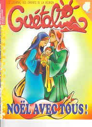

Pour le traditionnel mois des enfants du Père-Noël et de Miss France, Pas de pause cette année comme l’année dernière ou je vous présentais un flamboyant qui clignote. Ce décembre est le dernier du siècle et il faut en profiter. Juste un petit mot avant la fin de l’année pour vous signaler que Noël c’est l’anniversaire (à quelques jours prêt) de la naissance de Jésus Christ.

Le site du diocèse de Saint Denis vous donne les horaires de messes de Noël et d’autres informations comme le jubilé de l’an 2000 qui commence. Comme les années sont comptées à partir de la naissance de Jésus, ce sont les 2000 ans (à quelques années près) de ce même Jésus Christ qu’on fête.
Rappelons que le catholicisme est la première religion de l’île.
Le nom d’origine diocese-reunion.com a laissé place en 2009, à un nom moins commercial (sans point com donc) et moins technique (diocèse est un jargon technique clérical alors que tout le monde sait ce qu’est une église). Le site s’appelle donc aujourd’hui eglisealareunion.org mais c’est toujours le site du dicèse. Il a aussi modernisé ses couleurs en agrandi le nombre de ses rubriques. Il présente toujours, après 20 ans les éditoriaux de l’évèque Monseigneur Gilbert Aubry qui est à lui seul le témoignage de la stabilité du culte catholique à la Réunion.